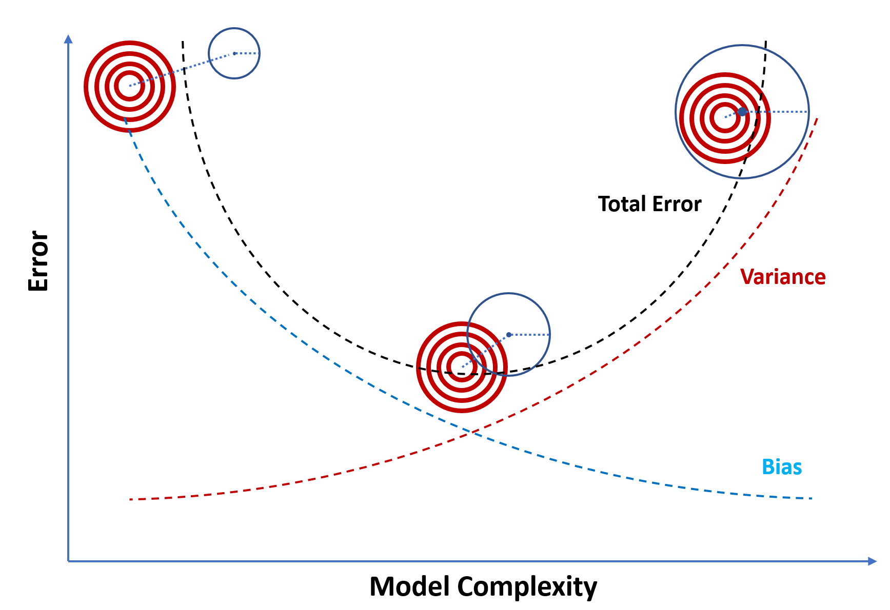
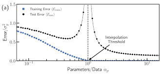

Neural Networks
In 1943, An neurophysisicist named Warren McCulloch and a mathemetician named Walter Pitts tryed to explain how neurons in the brain may work.
They created a simple model of a neuron using electrical circuits. Creating the first neural network.
Suprisingly neural networks were unpopular for many decades, however slow advances in the field of neural networks slowly shifted research.
Neural networks nowadays are the backbone of almost all modern machine learning systems, including LLMs.
How Does it Work
While the inspiration come from the neural network of our brains, modern neural networks function differently. Let say we want model the behavior of students before a test using a single neuron. A single neuron (also known as a perseptron) takes in some inputs and scales them by their corresponding weight, sums them together, before adding or subtracting some bais and outputing the result. As a student your desicions (Outputs) is influcence by the context (Inputs) of your specific situation. let assume that all students care about is the days till deadline and fondness of the course. Below represents corresponding neuron:
A neural network connects mutiple neurons up layer by layer to increase the complexity. Often neural networks are divided into 3 parts: the input layer, the hidden layers, the output layer. Using a neural netowrk instead to model the example we have.
Training
A neural network by itself would simply output nonsense, however through the process known as "training" a neural network can learn patterns.
This can only be done if
1. There is a defined and easily mesurable goal
2. There is sufficent number examples
3. There is enough of a pattern to learn
The Bias-Varriance Tradeoff and Double Decent
Another very important concept is known as the bais-varriance tradeoff. Where techniques that reduce varriance result in a increase in bias and the converse also holds. In pratice this means that models should not be too big or too small. As when their small(underfitting) their bias is small but variance is large, and the otherway around for when the model is too big(overfitting). The least error occurs when the model perfectly fix the data.

One perhaps more intuitive explaination for this behavior is that:
When the model is underfitting it is not big enougth to capture the pattern intrisic to the data.
When the model is overfitting it ends up learning the noise in the training data provided.
It unknown the exact cause for this phenomenon, however under certain cricumstances the model beyond the point of overfitting may have it error drop back down. This depends on the learning algorithm used the problem being solve and so many more factor many not understood. This phenomenon is known as double desent.
One potential way to expain the phenomenon is that when really big models are essentially made up of many smaller models. Generally the better smaller models making up the larger model learn faster. Thus when the model finish training it functions equavalently to the better of the all the possible smaller model.